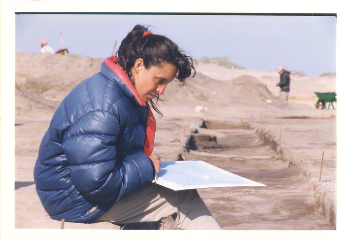
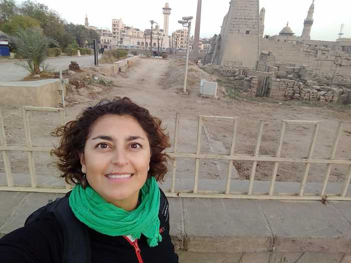
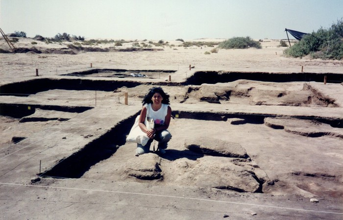
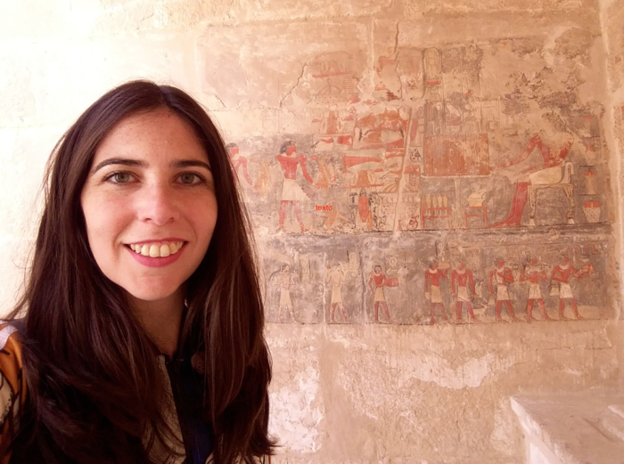
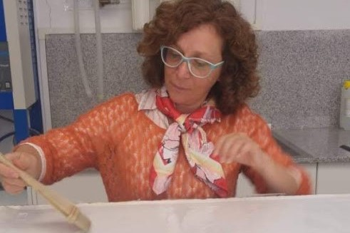
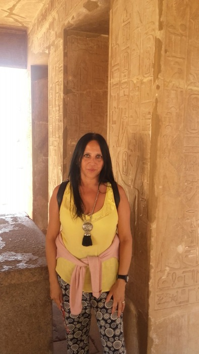
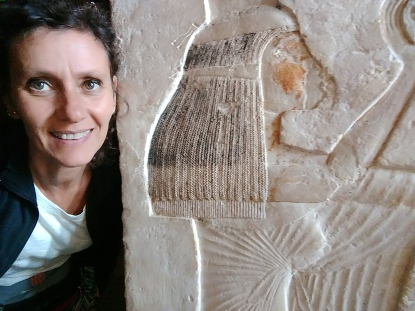

Andrea Paula Zingarelli
Profesora en Historia (UNLP) y Doctora en Historia (UBA)
Docente e investigadora. Profesora titular de la cátedra Historia General I (Antiguo Oriente) - Facultad de Humanidades y Ciencias de la Educación, Universidad Nacional de La Plata.

Silvana Lorena Yomaha
Profesora, Licenciada y Doctora en Historia (UNC)
Profesora Asistente en la Cátedra Historia Antigua General - Facultad de Filosofía y Humanidades, Universidad Nacional de Córdoba.

Silvana Fantechi
Profesora de Enseñanza Secundaria, Normal y Especial en Historia (UBA), y Licenciada en Historia (UBA).
Jefa de Trabajos Prácticos de Historia Antigua I (Oriente) - Cátedra B - Facultad de Filosofía y Letras, Universidad de Buenos Aires.
Pablo Martín Rosell
Profesor y Doctor en Historia (UNLP)
Docente e investigador. Jefe de Trabajos Prácticos en la Cátedra de Historia General I (Antiguo Oriente) - Facultad de Humanidades y Ciencias de la Educación, Universidad Nacional de La Plata.

María Belén Castro
Profesora y Doctora en Historia (UNLP)
Docente e investigadora. Jefa de Trabajos Prácticos en la Cátedra de Historia General I (Antiguo Oriente) - Facultad de Humanidades y Ciencias de la Educación, Universidad Nacional de La Plata.

Myriam Hara
Licenciada en Museología y Repositorios Culturales y Naturales- UNDAV
Responsable del Área de Conservación del Archivo Histórico de la UNLP

María Silvina Vera
Licenciada en Artes Plásticas. Profesora Asociada de la Cátedra Historia del Arte Antiguo de la Licenciatura en Artes Visuales de la Facultad de Artes y del Departamento de Artes Visuales de Aguilares. Directora del Instituto de Arte y Cultura del Oriente Antiguo, Facultad de Artes, Universidad Nacional de Tucumán.

María de los Ángeles Suárez
Profesora de Educación Secundaria en Historia (IES del Atuel N°9-011), y estudiante de Licenciatura en Educación (UNQ).